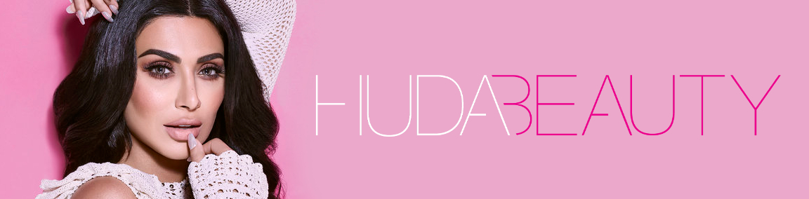

Historia de HudaBeauty
Dejó el mundo de las finanzas por su pasión por la belleza y,
seis años más tarde, se ha convertido en la bloguera musulmana más famosa que cuenta con su propia línea de maquillaje.
La iraquí Huda Kattan nació en Tennesse (Estados Unidos) hace 32 años, lejos de las estrictas normas islámicas de que las mujeres deben
lucir los hiyabs y las túnicas para salir a la calle.
Desde pequeña se sentía atraída por el mundo de la belleza y su sueño era ser maquilladora de estrellas en la Costa Este de Estados
Unidos pero estudió Finanzas porque sus padres querían que tuviera una carrera universitaria. Sin renunciar a este sueño, Huda empezó a
escribir su blog en 2010, mientras vivía por trabajo en los Emirates Árabes, y un día decidió dejarlo todo y convertirse en maquilladora,
trabajando con uno de los profesionales más admirados por las celebrities, Joe Blasco, en Los Ángeles.
Tras este período, la joven estableció su residencia en Dubái y trabajó como maquilladora para las mujeres y turistas de la ciudad. Además, Huda decidió
darle un giro a su blog y empezó a publicar tutoriales de maquillaje con el objetivo de ayudar a las mujeres que querían potenciar su belleza y no sabían cómo.
Seis años más tarde, el blog Huda Beauty ha sido reconocido como uno de los blogs del año y su autora fue nombrada Mujer del Año por la revista Woman Emirates.
La página de belleza recibe miles de visitas diarias y también tiene más de 11 millones de seguidores en Instagram y casi 900.000 en Youtube, aunque sus vídeos superan las 4 millones de reproducciones,
como el tutorial para acabar con los puntos negros con la pasta de dientes.
La mayoría de visitas que recibe Huda son de personas que viven en los Emiratos Árabes, una cifra que no es casualidad ya que las mujeres árabes son grandes amantes del maquillaje.
Según explica Mertxe París, profesora universitaria experta en el mundo islámico, “las musulmanas viven por y para la moda. Para ellas es su forma de vida y gastan muchísimo dinero tanto en ropa como en maquillaje. Es su estilo de vida”.
Sobre el éxito de Kattan, París afirma que no le “extraña”, ya que sus fans “se ven reflejados en ella. Esta bloguera es su referente y la ven como una oportunidad para poder maquillarse como ella. Aunque ha crecido en Estados Unidos,
Huda es consciente del papel de la mujer árabe y su blog es una manera de ayudar a las musulmanas a expresar sus gustos y disfrutar de sus caprichos”.